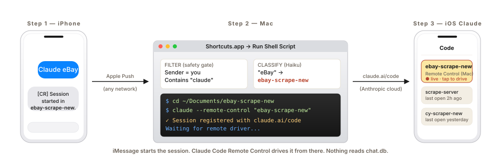
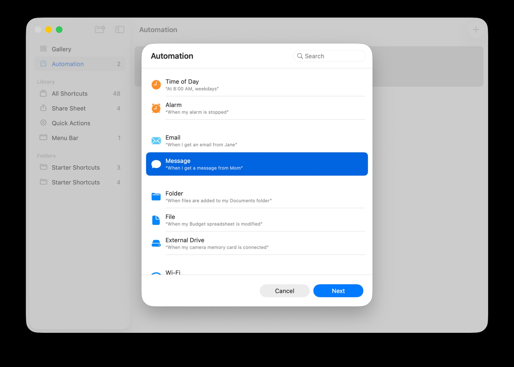
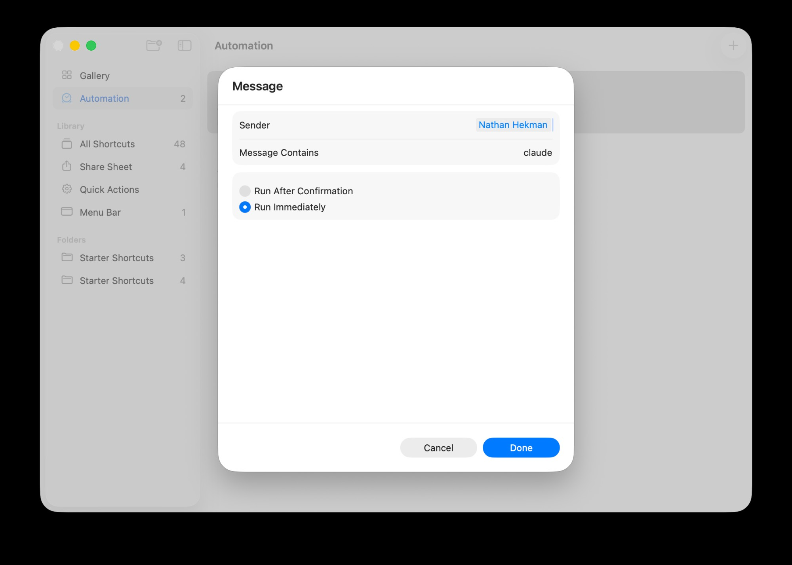
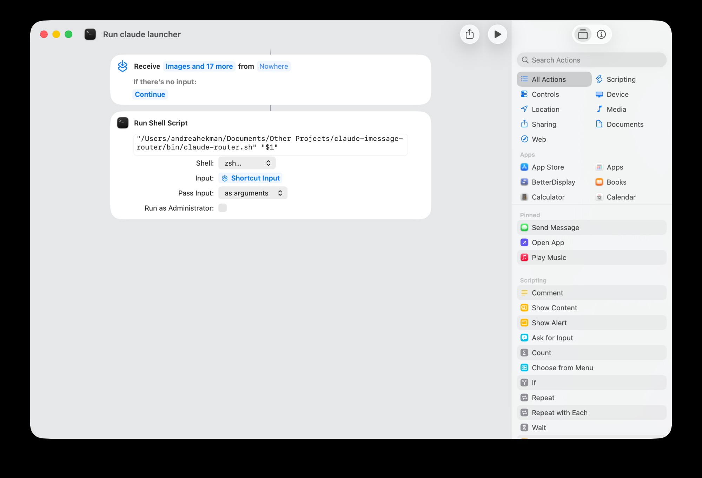

Claude Code · iMessage Bridge
iMessage Claude eBay to your own number. Your Mac opens the project, Remote Control on, ready to drive from the iOS Claude app a few seconds later.
One iMessage in. One Terminal pop on the Mac. One session live in the iOS Claude app. Apple Push handles the network, no Tailscale, no VPN, no chat.db.

Claude eBay to your own number.eBay → ebay-scrape-new, Terminal opens with claude --remote-control.iMessage starts the session. Claude Code Remote Control drives it from there. Nothing reads chat.db.
Other "iMessage for Claude" bridges read ~/Library/Messages/chat.db, your entire iMessage history. BlueBubbles works that way. Anthropic's own iMessage integration works that way. Powerful, but a giant trust ask.
This bridge doesn't read chat.db. The shell only ever sees the one message that matched your Shortcut filter.
Native macOS Shortcuts · Apple-first-party trigger gate
It rides Apple's first-party "When I get a message" Personal Automation, which gates every trigger by Sender = you + Contains "claude" before the script sees a byte.
| cc-imessage-remote-control | BlueBubbles / chat.db readers | |
|---|---|---|
| Reads chat.db | No | Yes, full history |
| Sees other contacts' messages | No | Yes |
| Trigger gate | macOS Shortcuts (Apple-native) | Custom listener / MCP server |
| What the shell sees | One matched message body | Anything the agent asks for |
| Failure mode | Trigger silently doesn't fire | History potentially leaks |
| Setup involves | Shortcuts + a config file | Full Disk Access to a third-party app |
If you wouldn't grant a third-party app permission to read every iMessage you've ever sent, this is the bridge you want.
One shortcut in Shortcuts.app + one Personal Automation that triggers it. The setup wizard inside Claude Code does the path-pasting for you, these screenshots are reference.


claude.
Pass Input: as arguments.It's a Claude Code plugin. Two commands and a restart.
claude plugin marketplace add nathan-hekman/cc-imessage-remote-control
claude plugin install cc-imessage-remote-control@cc-imessage-remote-controlRestart Claude Code, then run /cc-imessage setup. The wizard collects your phone number, writes the config file (mode 600, in your home dir, never in the plugin cache), prints the exact line to paste into Shortcuts, opens Shortcuts.app, and runs a self-test ping. About 5 minutes start to finish.
bash <(curl -fsSL https://raw.githubusercontent.com/nathan-hekman/cc-imessage-remote-control/main/install-claude-code.sh)Clones the repo to a temp dir and runs the installer. Idempotent. Safe to re-run.
Full install reference, including local clone and uninstall: INSTALL.md. Security model: SECURITY.md.
No. iMessage rides Apple's push network. Works from anywhere with cell signal. claude --remote-control registers the session with the Anthropic cloud, which your iOS Claude app reaches over its own internet. The only requirement is that your Mac is powered on, awake, and signed into iMessage. (Turn on "Wake for network access" in Energy Saver if you want to text-trigger while the Mac is asleep.)
No. The router only ever sees one message at a time, the body of the message that matched your Shortcut filter. Shortcuts passes that body to the shell as $1. Haiku is asked to map that one phrase to a project slug from a fixed allow-list of your folder names. Nothing reads chat.db or any other Messages storage.
Both of those work by reading your full chat database (~/Library/Messages/chat.db) so a model can see every iMessage you've ever sent. This bridge does not do that. It uses Apple's native macOS Personal Automation in Shortcuts.app as the trigger gate, same trust model as any Shortcut you'd build yourself. The bridge can't see any conversation it isn't explicitly triggered on, by you, with the word "claude".
No. The Shortcuts automation filters on Sender = your own contact card. Messages from anyone else are ignored before the shell script ever runs.
The message body is never executed as shell. It's passed as a string argument to Claude Haiku, which is constrained to return one slug from a fixed allow-list of your own folder names. Anything else returns NONE. Once the Claude Code session is running, normal Claude Code permissions apply, same as if you opened the project yourself.
A tiny amount. Each trigger fires one Claude Haiku 4.5 call to classify the project name, a few hundred tokens, well under $0.001 per text. The coding session itself uses your normal Claude Code plan.
Remote Control is on both Pro and Max. Either works.
If "Wake for network access" is on in System Settings → Energy Saver, the Mac wakes for the incoming iMessage push and runs the automation. Otherwise the trigger queues until the Mac is awake again.